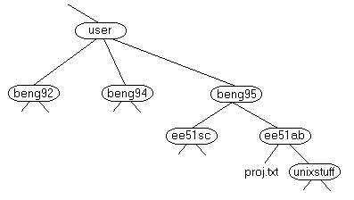
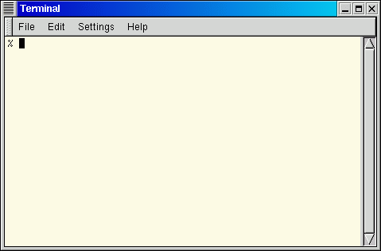

此会话涉及 UNIX，这是一种常见的操作系统，对于操作系统 ，我们指的是使计算机工作的程序套件。UNIX 是学校里的多用户服务器，并通过工作站来使用。
在 X 终端和工作站上，X Windows 在用户和 UNIX 之间提供了一个图形接口。但是，对于图形程序未涵盖的操作，或者没有 X windows 系统（例如，在telnet会话中），就需要 UNIX 的知识。
UNIX 操作系统由三个部分组成； 内核，shell 和程序。
内核是操作系统的中心： 它为程序分配时间和内存，并处理文件存储和通信以响应系统调用。
作为 shell 和内核协同工作方式的说明，假设用户键入 rm myfile（具有删除文件
shell 充当用户与内核之间的接口。当用户登录时，登录程序会检测用户名和密码，然后启动另一个名为 shell 的程序。 shell 是一个命令行解释器（CLI）. 它解释用户输入的命令并安排执行它们。命令本身就是程序：当他们终止时，shell 返回提示符（在我们系统上是 % ）给用户。
熟练的用户可以自定义他/她自己的 shell，用户可以在同一台机器上使用不同的 shell，学校的工作人员和学生使用默认的 tcsh。
tcsh shell 具有某些功能，可以帮助用户输入命令。
文件名补全 - 通过输入部分命令名，文件名或目录名，然后按 [Tab] 键，tcsh shell 将自动补全名称的其余部分。如果 shell 找到不止一个以你输入的字母开头的名称，他将发出哔声，提示你再次输入 [Tab] 键之前，输入更多的字母。
历史纪录 - shell 保留了你输入的命令列表。如果你需要重复一个命令，请使用方向键来上下滚列表，或者输入 history 以获取以往命令的列表。
在 UNIX 中任何东西要么是个文件，要么是个进程。
进程是个由唯一 PID （进程标识符） 标示的执行程序.
文件是数据集合。它们由用户通过文本编辑器创建，运行编译器等等。
文件的示例
所有文件都在目录结构中组合在一起。 文件系统以层次结构排列，如倒置树。 层次结构的顶部传统上称为 root。

在上图中，我们看到目录 ee51ab 包含子目录 unixstuff 和文件 proj.txt
要启动 Xterm 会话，点击你桌面上的或下拉菜单的 Unix 终端图标。
将出现带有 Unix 提示符的 Xterminal 窗口，等待输入命令。

M.Stonebank@surrey.ac.uk, © 9th October 2000